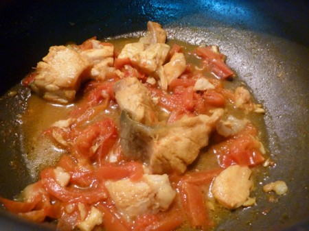
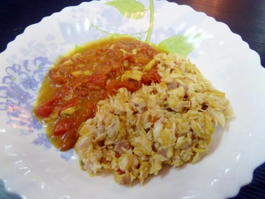
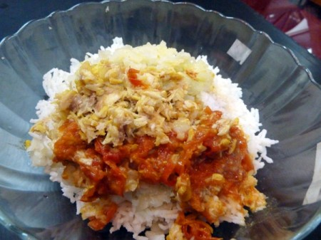
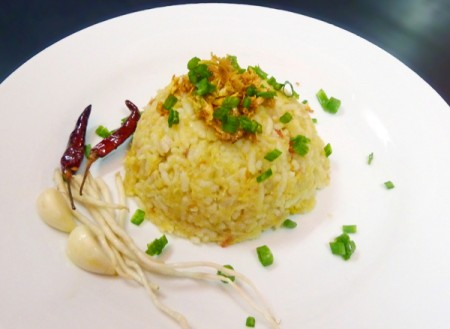

Fish Rice Cake(Shan Style)
Ingredients
- mrigal – 250 g (cut into large pieces)
- 3 tomatoes, sliced
- 1 tbs fish sauce
- 2 large potatoes, boiled until tender
- 4 cups cooked rice
- 1 ts of salt
- 2 ts of chicken powder
- 1 ts of turmeric powder
- 5 cloves of garlic, chopped
- 4 tbs of vegetable oil
- fresh of spring onion, sliced
- 1 chive root
- 8 fried dried red chillies
Instructions
- Heat oil in a wok. Fry garlic until fragrant.
- Add half teaspoon of turmeric and stir well 30 seconds.
- Separate oil and fried garlic.
- Add mrigal, tomatoes, half teaspoon of turmeric, fish sauce and 2 cups of water to the pot and boil it until all tomatoes are crushed.

- Then remove the fishes from boiling pot, debone and skin, then flake flesh.

- In a large bowl, add rice, mashed potatoes, flake fish, tomatoes paste, turmeric oil, fried garlic, salt and chicken powder, and mix well by hand.

- And make fish rice ball or fish rice cake by hand.
- Add a few spring onions and fried garlic. Serve with chive root, dried red chillies and garlic.
